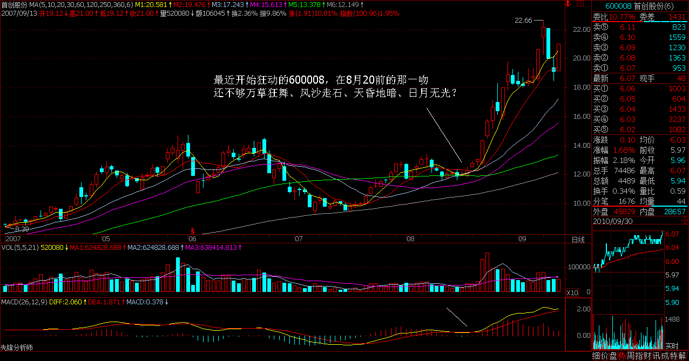
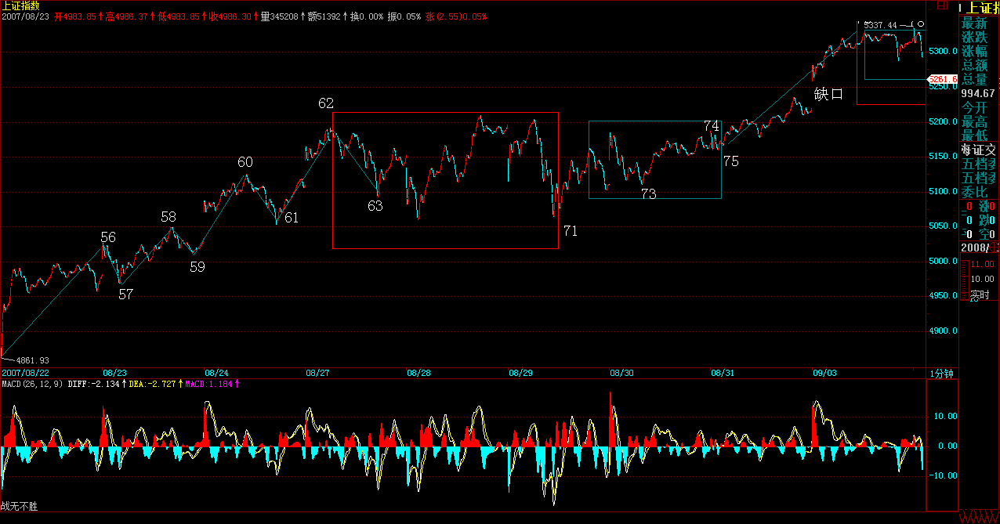
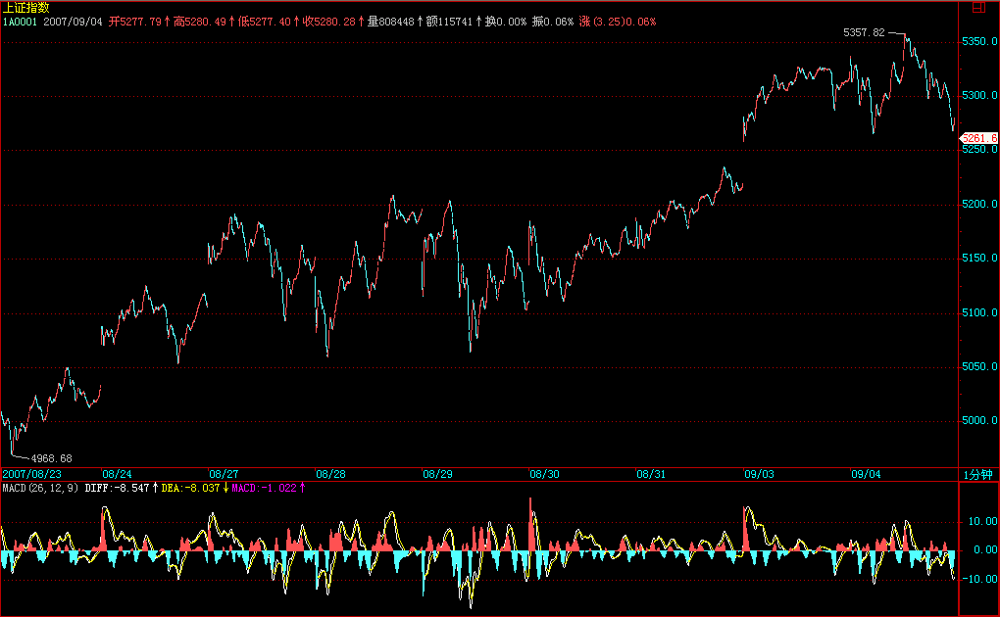
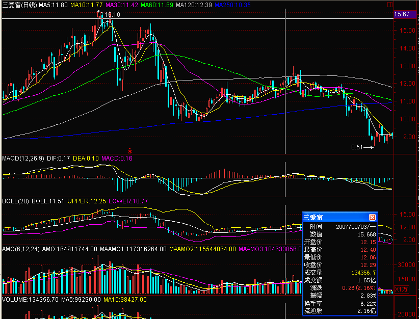
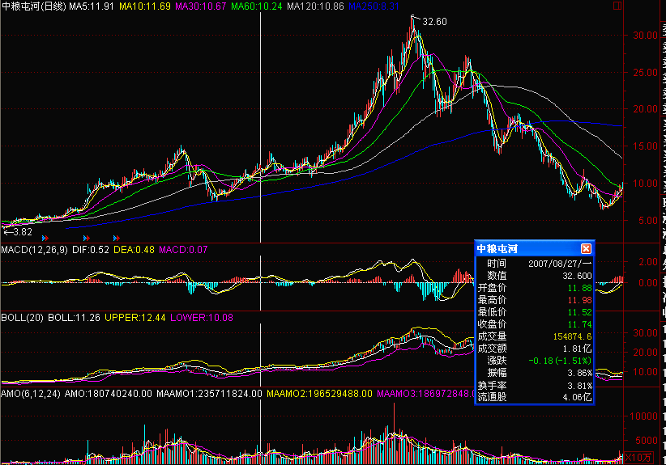
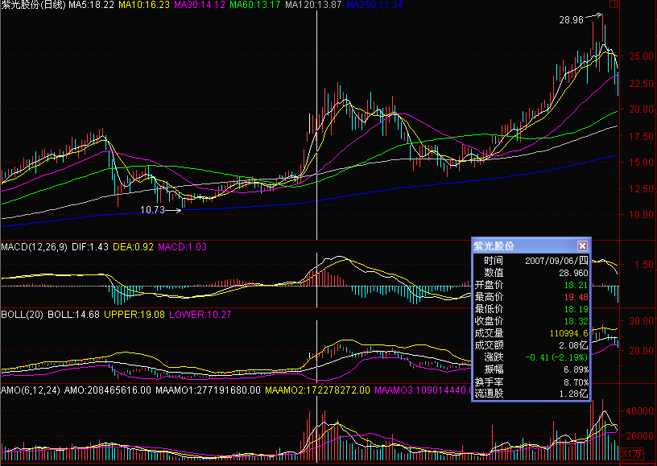

|
 |
教你炒股票75：逗庄家玩的一些杂史1
(2007-08-29 22:00:23)
当然，以下这些，都是本ID胡言乱语，梦话连篇，各位就当笑话看，谁当真谁有毛病。
说故事，不过让各位认识一下市场运行中一些更深层次的东西。走势是由合力构成的，但各分力后面代表的，都是真实的、有思想有感情的人，因此，了解一下一些心理层面的东西，还是有好处的。
市场里有一种这样的人，这种人的资金实力当个庄家肯定是一点问题都没有，而且一般来说，这种人以前都是牛庄，但后来，因为证券法之类的法律出来，不想惹事，或者就太懒了，天天去算计散户太累，还不如一下算计一个大家伙，吃一顿够N顿了，或者就是无聊，看着别人当庄，就是想搞死，赚不赚钱倒是次要，一般这种人，钱早不是问题，纯粹是为了开心或者就为了教训一下暴发户。
说句实在话，搞股票，归根结底是搞资源组合的能力，功夫在诗外，组合能力强，资金能长期坚持，有什么不能成功的？本ID有一个不大好的习惯，就是对被搞废掉的人，从来都不关心，但这两年，本ID不断发现，有好几个N年前，注意，这个N有的都快到10了，被本ID搞废掉的，竟然都坚持到了大牛市，都成了这两年最牛的股票之一，一打听，人还是那些人，歌还是那些歌，这些人身残志坚地把N年的生命都奉献给了某只股票，连本ID都不得不说，人的无明之力，真是老强大，佩服佩服。
为了表彰这些残废人士的惊人业绩，本ID对其中几只不点名地表扬一下：
搞死庄家，首先对其资金面、来路等等方面有充分的了解。那些光有几个钱，靠收买了个把刺史、郡守就蚁假猫威的暴发户，是最该收拾、也最容易收拾的。一般来说，资金上的弱点是攻击的最好前提。当然，资金没什么弱点的，也可以攻击，特别是那些水平不高的新庄家。在市场上，新人新猪肉，被吃是天经地义的。还有一种，就是刚成功一把正在G点上G着的，这种是绝佳的猎杀对象。
还你漂漂拳之风再起时(2007-08-30 16:05:43)
漂亮50歇菜是好事还是坏事，如果昨天早上还没看明白，那还是可以原谅的；看了本ID昨天下午的“ 其他个股，借着漂亮50休息而风起云涌一把，这也是天经地义的事情。”还不明白，那最好的归宿就是孔男人一把；如果到了今天还不明白，大概连孔男人都对你绝望了。
还你漂漂拳之风再起时，什么风？二、三线股之风，让指数见鬼去，重开上半年二、三线股走势之风。还你漂漂拳，将二、三线股的丑八怪打出一个个大可面首的成熟爷们，这就是还你漂漂拳之风再起时。
什么叫一吻高潮？看看600635、000998、000938、000099、600578、000915等等，(2买）。哪个不是吻得万草狂舞、风沙走石、天昏地暗、日月无光的？就算最近开始狂动的600008，在8月20前的那一吻，还不够万草狂舞、风沙走石、天昏地暗、日月无光？你去看看今天涨停的股票，有多少是一吻而万草狂舞、风沙走石、天昏地暗、日月无光的？还记得几天前本ID再次强调吻的重要，难道吻都要别人代替？
以上只是技术上的一些小技巧，以后不再说了，有缘得之，爱谁谁去。

现在，初步回到本ID希望编排的剧本，这剧本在这一章节只有一句话：指数耷拉，二三雄起。指数耷拉，将使得一些极为迫切解决的矛盾不会一下被激化，而二三雄起，又可以消耗目前一些多余的能量。记得本ID在8月13日的话吗？原文：“个股方面，一、二线成分股的行情依然会延续，但要注意升幅过大后的短线震荡风险，而当业绩风险释放后，二、三线题材股会找到重新活跃的动力。”
现在，中期业绩的公布已经尾声，该发生的就需要发生。而本ID为什么前几天狂批“快男”，就是他们的节奏有打乱本ID剧本的可能，对这种拿着别人钱乱搞之人，不教训一下怎么行？
本ID的持有结构十分明确，就是中字头和那10几只谁都知道的二、三线股，中字头，如中铝者不愿意休息就让他休息，顺便差价一番，这没什么不对的。当然，站在中长线角度，这些中字头的潜力远远没有发挥出来，本ID乐意和他们海枯石烂，但现在，本ID觉得4N9一下二、三线股，难道不是一件很浪漫的事？
大环境，本ID已经说得很清楚，就是警报声声，而且还一度几乎擦枪走火，这时候该干什么，所有对市场的长期有珍惜的人，都应该明白。市场的做多能力没地方宣泄，就找地方让他们宣泄，而不能影响整个大局，这就是目前市场参与者应该有的共识。
当然，市场是所有人的，有些人，拿着别人的钱乱搞，最终搞死市场，这种人一定要受到市场的严重声讨。现在，这伙人好象新钱有点少了，气焰大概也消停一些了，那么就反省去吧。
短线技术上，没什么可说的，就是还是昨天说的5分钟震荡，这就很好。
明天周末、又是月线收盘，任何温和的走势，都是本ID可以接受的。周末，究竟会有什么？还是先看看现在都有什么了，最近这温柔的一刀包括：
一、风险提示；二、停发基金；三、直通车；四、6000亿等等。
那么，不温柔的一刀呢？
本ID可以明确地说，那市场的做多冲动引到二、三线股，只是一种最好的选择，但不是一个绝对安全的选择。与其让市场在漂亮50上继续冲动，还不如玩一把还你漂漂拳之风再起时。
请注意，没有任何股票值得追高，而且目前政策面上依然风云多变，更没有追高的必要。
今天既然风再起时了，可以回答问题、还你漂漂拳到5点。
缠中说禅：
2007-08-30
16:14:16 [举报]
[匿名] 白玉兰
缠中说禅：
2007-08-30
16:18:28 [举报]
老实念佛 删除此人所有评论
缠中说禅：
2007-08-30
16:22:21 [举报]
fzznl 删除此人所有评论
缠中说禅：
2007-08-30
16:29:30 [举报]
[匿名] 天眼 删除此人所有评论
缠中说禅：
2007-08-30
16:39:43 [举报]
缠中说禅：
2007-08-30
16:41:32 [举报]
[匿名] July 2007-08-30 16:23:01
缠中说禅：
2007-08-30
16:42:49 [举报]
[匿名] 新浪网友 删除此人所有评论
缠中说禅：
2007-08-30
16:44:55 [举报]
[匿名] 新浪网友 删除此人所有评论
缠中说禅：
2007-08-30 17:00:16 [举报]
快乐vs菜虫 删除此人所有评论 另外，课程65当中“第n根K线满足第n根与第n+1根的包含关系，而第n根与第n-1根不是包含关系，那么如果gn>=gn-1，那么称第n-1、n、n+1根K线是向上的；”这段话应该也是有问题的，应该把 "gn>=gn-1改成 "gn>gn-1"。 缠中说禅：
2007-08-30
17:01:13 [举报]
[匿名] 吻 删除此人所有评论
缠中说禅：
2007-08-30
17:02:20 [举报]
[匿名] 50年以前 2007-08-30 16:52:50
缠中说禅：
2007-08-30
17:06:43 [举报]
逍遥往2007-08-30 16:53:05
刀锋上的行走
(2007-08-31 16:04:19)
目前的状况，已经反复说得很清楚。目前已经给出比较严重泡沫的定性，这可不是本ID说的，至于谁说的，当然也不可能在这里说。在这样一个明确定性的大背景下，任何的行走，都如同在刀锋上的游戏。
指数耷拉、二三雄起，这是目前现实状况下最可行的走法，这剧本显然已经得到足够多的共识。这样，至少能延缓指数上涨的速度，而且能使得受益面能尽可能的广。为什么？因为目前的强劲做多欲望必须被消耗掉，这欲望，来自人的贪嗔痴疑慢共业，如此之强大，必须在疯狂中最终燃烧尽，才有回头的可能。当然，还有一种最干脆的做法，就是再530一番，这一把刀一直悬在头上，铺在脚下。但贪嗔痴疑慢共业如此强大，能否不触及那把刀，又能让贪嗔痴疑慢共业尽情疯狂，这就是目前剧本中最激动人心的篇章。
今天周末的行情，在下午，明显受到对周末消息面的担心而产生震荡，但最终的震荡都在前几天最高位上受到支持，这就充分显示目前做多能量需要消耗的急迫性。如果周末没有任何足够分量的消息，那么下周，这能量将有一个大的爆发。
再一次用一个最直白的话把这N天反复说的话再说一次：打击快男，使得疯狂中的可获利面极大扩大，一句最狠的话就是，就算疯狂过后是无限的地狱，但多数人的疯狂总比单纯漂亮50的疯狂来得更公平、更有趣一些。
下周，绝不排除出现群魔乱舞的状况，如果能尽量减少指数涨幅而带动更大面积的疯狂，这就是最好的状态了。3/4线还有足够远的空间，而且加上突破后的顺势，有足够的空间去完成这种疯狂。但必须明确注意，这疯狂的代价，与刀锋相关。
既然选择了在刀锋上行走，无论市场还是个人，都要明确知道这行走的代价。其实，没有什么是不可以的，但必须知道代价以及能够去承受这代价。那些又要玩刀又怕被刀杀着的，回家玩豆腐吧。
个股方面，没什么可说的，该说的，在8月13日已经全说了：“个股方面，一、二线成分股的行情依然会延续，但要注意升幅过大后的短线震荡风险，而当业绩风险释放后，二、三线题材股会找到重新活跃的动力。”
至于一直有人说本ID原来那10几只股票基本面很差，纯粹垃圾股的，最近的看法也应该有所改变了。本ID从来不乱买股票，如果乱买，那么整个股市中最和VC与PE相关的两只股票600635、000938，为什么都在本ID的组合里？本ID那10几只股票中，业绩暴增百分之几百、甚至一千的，难道还少？当然，这只是冰山一角，就像000938，谁告诉你就是PE、VC这点事情？
长线介入与短线介入是根本不一回事情，本ID已经把最好的方法告诉各位了，就是利用中短走势把长线成本降到0，然后长线持有，对于大资金，这基本是唯一可行又效率最高的方法。如果是小资金，那根本不需要这样，你忙得过来，技术又可行，那么天天都可以419一把，关键是你能否有这时间、通道与技术。
但小资金弄好了，最终都要大资金的，所以最终都要走这条道路。
没有成本，本质上就是没有占用资金，这样才有安心持股的可能以及效率。那些，连几个月都熬不住的，根本就不适宜做股票。例如，000938之类确实很无聊，但如果你0成本长线持有了，那就不无聊了。这股票历史天价是100元，一个清华的股票，大牛市竟然可以不创历史新高，你相信吗？当然，这可能需要1年、2年、N年，但对于0成本后，就无所谓了。而且，清华企业的整合是必须和必然的，这里的空间有多少，本ID不想去预测，没意义。总之，本ID0成本地和他海枯石烂了。那些天天想着涨停短线的，还是去顶豆腐比较有意义。
其实，本ID还有一只独自去偷欢的股票，比000938更无聊，就是000021，原来的深科技，7元时介入的，现在已经三个季度了，除了已经把成本降为0，这股票没有任何值得炫耀的地方，但本ID也和他缘定三生了。
对不起，本ID只会把股票变0成本后海枯石烂地持有，除此之外，对大资金，本ID不知道任何在大牛市里更好的操作方法。当然，在一个大级别的回调中，本ID也会弄一个短差去增加筹码数，这大概就是本ID唯一能再干的活了。
周末，腐败比股票可爱。
散去吧。
目前市场所处阶段
(2007-09-03 08:49:53)
最近，新来的人太多，鱼龙混杂，本ID就入水入泥，再说一下目前市场所处阶段。这些，都在前面反复说过，但为了照顾一般水平的，不妨再明确说一次。
本ID的观点，从来都是一贯的，依照相同的逻辑关系展开：
一、这轮大牛市至少再延续20年，至少再上升3万点以上。这个观点，一直没有改变，包括这大牛市可以划分的三大阶段，已经明确说过。
二、目前的走势处于大牛市第一阶段的泡沫化过程中。由于从低估到回到正常位置的GDP用了2年，上升4点5倍。从纯对称的角度，泡沫化阶段也可以延伸2年，上升4点5倍，也就是在极端情况下，可以到达2万点。但有一点是必然的，就算先到2万点，那么后面泡沫破裂后，必然在回到GDP的位置，也就回到目前以下的位置。
三、泡沫可以自然破裂，也可以人为戳穿，人为戳穿的情况，关系到政策的调控，属于不可系统的风险。面对这种风险，必须要明确，就是这不改变任何长期趋势，最多就是制造一个中线的调整。如果调控相对高明，那么泡沫化阶段可以延续的时间就长点，高度就大点，而且后面的破裂相应的杀伤力就小点，但能否达到这种调控水平，本ID没有任何信心。
四、在泡沫化阶段，就如同在刀锋上行走，既然选择了如此，就只能如此下去，有任何损伤都不能怪任何人，要自我承担。如果没有这心脏，那就退出，也别眼红别人去赚取泡沫化中的超高回报。在泡沫化阶段，需要更好的心态、更高的技术。
五、有些股票是值得持有20年，等待整个牛市结束才抛出的，一旦选择了这种股票，就是天荒地老、海枯石烂地持有，但可以根据中短线的波动去把成本降低、在0成本后再增加持有的筹码。站在大牛市的长线角度，泡沫的破裂，也就是提供一个减低成本、增加筹码的大机会，如果有这技术、心态，就要好好把握，如果没有，就坚定信念，义无返顾地持有20年。
下面是半年报中业绩最好的前10名：
每股收益前十名 000338 潍柴动力 1.87 *ST浪莎只是重组而来的利润，没什么实质意义，因此实质第一名的是潍柴动力，也就是本ID要海枯石烂的10来20只股票中的一只，另外一个吉恩镍业也在十名之内。由此可见，说本ID的股票都是垃圾股的，就是胡说八道。
本ID股票的基本面，过N年以后再评论吧，现在，你又能看到什么？
吃得咸鱼抵得渴(2007-09-03 15:38:43)
去广东，总能学点古灵精怪的中文，例如本文题目。这句话的意思，用来要求现在的市场参与者，是最恰当不过了。
今天的大盘，如上周五所论，周末没有任何足够分量的消息，因此做多能量如期爆发。但今天有一个有趣的现象，就是大盘在5330点下徘徊许久，就是不敢上去，为什么？因为4330点上曾留下的记忆依然太过深刻。
现在，每天都等于一个对赌，就是赌当晚没有特别的消息。最重要的问题是，现在消息决策的保密程度，已经超过一般人的想象，否则，529怎么可能是最高收盘？因此，市场能量依然强劲与对消息面突发性的担忧，构成目前走势的最大一对矛盾。
在这种情况下，就要发扬“吃得咸鱼抵得渴”的精神，要干就狠干，干到消息出为止，出真家伙时，砸起来，看谁狠了。就算是530，早上大把个股还有红盘的时候，关键是该砸的时候决不手软，这样就有继续疯狂的资格，否则，就退出观望吧。
疯狂是需要资格的，没有这素质，没有这技术，就别疯狂。地球很危险，回火星去吧。而目前的疯狂，已经完全按照剧本来，就是二、三线狂舞。有人叫嚣宁愿蓝筹泡沫，也不让二、三动弹，是典型的脑子有水的表现，现实已经足够严厉地教训这些人了。
纯技术的角度，今天的缺口是引发短线震荡的技术隐患，因此，这缺口的技术意义必须被短线所重视。


个股方面，可以充分关注技术走势的意义。用本ID有的个股为例子说明：
第一类，如600636，属于最弱的股票，还没有重新站在半年线，这种股票的任务就是先站住半年线，然后再展开。具体到该个股，基本面上不存在任何问题，只是里面的人太杂。

第二类、如600737，前几天刚突破530点后的第一个反弹高位，然后回调，这对于其他股票有同样的意义，这类股票的任务就是通过震荡站稳该位置，然后才会去挑战530的高位。

第三类，如000938，突破530高位后出现震荡，这都是最正常的。这类股票，短线能否继续展开行情，关键就是这530高位能否在震荡后站稳。

对于补涨的二、三线股票，无非就是这三类，因此可以根据具体的情况，进行相应的短线处理，如果看不明白或没时间短线的，就看5日或5周线进出，这是中短线操作的最懒惰方法了。一般出现相应阻力的震荡，可以在冲高时先退出，下来再回补，用中枢震荡的方法，如果没这判断与技术，就算了。
另外，除非你技术特别过关，否则不建议目前频繁买卖，因为谁都不能保证你今天买的，不会在晚上就碰到一个恶劣的消息，对于心态、技术特别好的，当然无所谓，真出消息，一刀下去千了百了，但一般人可没这心态。
一定要注意，长线介入，一定是在长线买点，如果在一个短线买点介入要持有长线，是绝对地违反本ID的理论的。短线买点的介入就只意味着短线的操作，除非你有最坚强的意志，任何牢底都可以坐穿，否则，就别玩这游戏了。
本ID说的话就是话，例如，现在大盘的走势，是本ID可以接受的，但如果大盘快速突破3/4线后继续快速上涨去构造多头陷阱，那么就算没有政策，本ID也绝对不客气。这几天的中铝只是一个演习，中铝这次的演习，目的完全达到，使得二、三线的切换全面成功，从明天开始，爱谁谁去。
下午、晚上都给PE了，没办法，先下，再见。
|
|
|
|